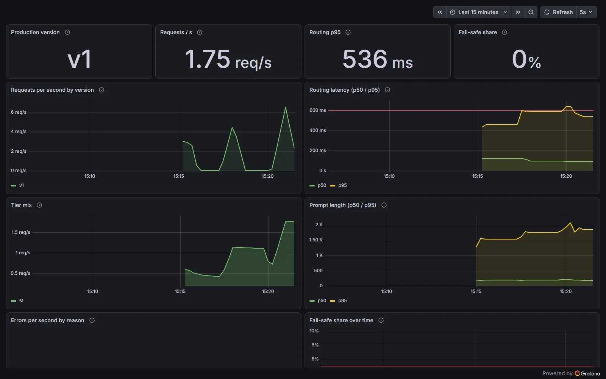

The lifecycle
01Gearbox's labelled prompts imported from a pinned commit; every input and output hashed, and CI rebuilds the data to prove it.
Qwen3-0.6B fine-tuned on a free Colab T4 GPU, exported to a 4-bit GGUF model that runs on a normal CPU through Ollama.
Every run tagged with its data version, prompt-template hash and git commit. Models are promoted by moving an alias.
Promote only if the candidate passes the Dyno gate, under-routes no more than production and keeps p95 latency under 600 ms.
FastAPI POST /route with hot-swappable versions. A share of Gearbox traffic tries the candidate; if Pitwall is down, Gearbox falls back safely.
Prometheus metrics, a Grafana dashboard as code and Evidently drift reports with alerts.
User feedback and failures become Dyno test cases, and drift triggers retraining on the new data.
Pitwall in production
02
Results
03| Measure | Result |
|---|---|
| Fine-tuning time and memory (free Colab T4) | 145 s, 3.7 GB peak |
| Served model size | ~400 MB (4-bit GGUF), CPU only |
| Routing latency on CPU | 108 ms median, 488 ms p95 |
| Cost per routing decision | ~£0, replacing a paid LLM classifier |
| Release gate and canary | Promotion, rollback and a 10% canary verified live through Gearbox |
| Full loop, run live | New kinds of prompts flagged as drift (classifier AUC 0.90), retrained in 256 s, gated by Dyno, released by 10% canary, promoted, then rolled back and re-promoted |
An honest finding
04The fine-tuned model matched the strongest simple rule but did not beat it. That independently confirmed Gearbox's result: which prompts need the large model is hard to predict from the prompt alone. The value of Pitwall is the pipeline, which now makes any future model safe to ship and easy to roll back.